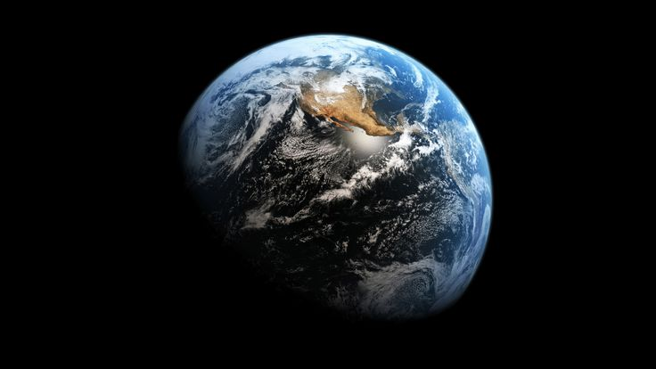
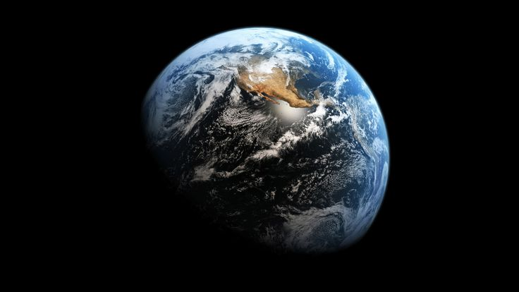

Задание: Рисунок с использованием чистого CSS
Описание задачи
В рамках данного задания была поставлена цель создать статическое изображение, используя исключительно возможности HTML и CSS, без применения JavaScript или графических файлов. Этот метод, известный как "CSS Art", позволяет продемонстрировать глубокое понимание свойств CSS, таких как позиционирование, трансформации, градиенты и псевдоэлементы. Задача требовала не только технической точности в воссоздании объектов, но и творческого подхода к композиции и цветовой палитре.
 

Создание сложных форм, таких как чайник или изгибы стульев, требует комбинирования множества `div`-элементов, каждый из которых стилизуется для формирования части общего изображения. Например, для создания закругленных поверхностей активно использовалось свойство `border-radius`. Тени и объем достигались с помощью `box-shadow` и линейных градиентов (`linear-gradient`). Этот проект является отличной практикой для оттачивания навыков работы с визуальными аспектами CSS и развивает внимание к деталям.